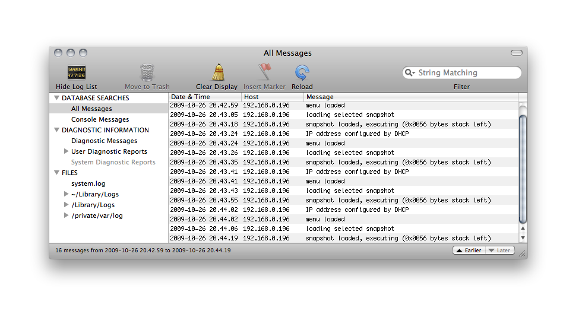

Here's how to use SpeccyBoot:
There is also a an optional feature:
You will need to install and/or activate a TFTP server on a computer in your local network. Fortunately, TFTP server software is freely available for most platforms. Your TFTP server must be capable of responding to broadcast requests, since that is what SpeccyBoot uses. Most (but not all) TFTP servers are, and some need an option explicitly set to enable this.
Most UNIX variants either include a TFTP server by default, or allow you to install one quite easily. There are third-party TFTP servers for Microsoft Windows too.
For Ubuntu 12.04, I recommend running NetKit tftpd:
sudo apt-get install xinetd tftpd
Then, to automatically launch tftpd from xinetd, create the file /etc/xinetd.d/tftp with the following contents:
service tftp
{
protocol = udp
port = 69
socket_type = dgram
wait = yes
user = nobody
server = /usr/sbin/in.tftpd
server_args = var/lib/tftpboot -s
disable = no
}
Note: the HPA TFTP server (the tftpd-hpa package) doesn't seem to work with SpeccyBoot. One of these days, I'm going to figure out why — it's quite possible that SpeccyBoot is misbehaving somehow. In any case, stick to NetKit tftpd for now.
In Mac OS X, the built-in TFTP server can be enabled as follows:
sudo launchctl load -w /System/Library/LaunchDaemons/tftp.plist
Your .z80 snapshots need to be stored in a particular directory to be found by SpeccyBoot and the TFTP server.
Create a directory named speccyboot in your TFTP servers's main directory (NetKit tftpd, as configured above, uses /var/lib/tftpboot; Mac OS X 10.6 uses /private/tftpboot; some other servers use /tftpboot). Copy your Z80 snapshots to this speccyboot directory:
SNAPDIR=/var/lib/tftpboot/speccyboot # <-- adapt this path to match your distribution sudo mkdir -p $SNAPDIR sudo chown <your-username> $SNAPDIR< cp <path-to-snapshots>/*.z80 $SNAPDIR
After you have created the directory above, and whenever you have added or removed a snapshot to/from this directory, you will need to update the SpeccyBoot index. This is a (case-insensitively sorted) list of snapshots named snapshots.lst. (The TFTP protocol doesn't have a "list directory" command.)
On a UNIX machine, the script speccyboot-update
can be used. It is located in the utils
directory of the SpeccyBoot source code, and is installed
into /usr/local/bin by running make
install from the speccyboot/utils directory
in the SpeccyBoot source tree.
Once speccyboot-update is installed, you can update the snapshot index at any time (i.e., when you have added a new snapshot) by typing
speccyboot-update
If the TFTP server configuration above went well, you should now be able to turn on your Spectrum, see it figure out its IP address as well as that of the TFTP server, and present your list of snapshots. Use the arrow keys to navigate the list, the alphabetic keys to jump directly to snapshots whose name begin with that letter, and Enter to load the selected snapshot.
To boot into BASIC rather than the SpeccyBoot menu, press Caps Shift and keep it pressed while power-cycling/resetting the Spectrum.
If the SpeccyBoot seems stuck, the border colour is used to show what went wrong:
| Border colour | Failure | |
|---|---|---|
| red | No response from server (despite several attempts to contact it) | |
| yellow | File not found on server | |
| cyan | The selected snapshot is not compatible with this hardware | |
This step is optional. The syslog feature will not affect your retro-gaming experience in any way. If you don't know what it is, you don't want it. If you do know what it is, you likely still don't want it. It can be rather useful for debugging, though.
SpeccyBoot uses (a liberal interpretation of) the BSD syslog protocol to display status information. Those messages can be viewed using a suitably configured machine in your local network. The syslog output is primarily useful for debugging.
Just like TFTP, the syslog protocol is supported by virtually all UNIX and UNIX-like operating systems. Most UNIX syslog daemons are capable of receiving syslog output from other machines in the network. However, most syslog daemons also disable this behavior by default, so you will likely have to explicitly enable it to see SpeccyBoot's messages.
In Ubuntu 12.04, edit /etc/rsyslog.conf and make sure the following two lines are uncommented:
$ModLoad imtcp $InputTCPServerRun 514
In Mac OS X, edit
/System/Library/LaunchDaemons/com.apple.syslogd.plist.
(More
details can be found here.)
Here's how SpeccyBoot syslog output appears in Ubuntu's log viewer:
Another way of viewing the syslog output is Wireshark. Wireshark interprets syslog messages correctly, and displays it along with the rest of the communication.